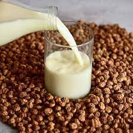

Tiger nut milk drink is an easy to make drink that is also vegan friendly. While the name does include nut, its actually a tiny root vegetable.
Ingredients
You'll also need a cheesecloth or other alternative to strain it and a pinch of salt.
Step
- You start by soaking the Tiger nuts overnight with a pinch of salt. This helps to soften them and reduce anti-nutrients
- Rinse them and blend with fresh, filtered water
- Once blended, it will look frothy, creamy and a lot like almond milk. Just like homemade almond milk, you need to use a nut milk bag to strain your tiger nut milk.
- Pour your blended tiger nut milk through a cheesecloth and squeeze into a large bowl.
- Pour in desired storage container. Store in the fridge.